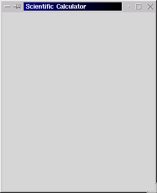
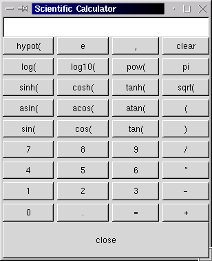
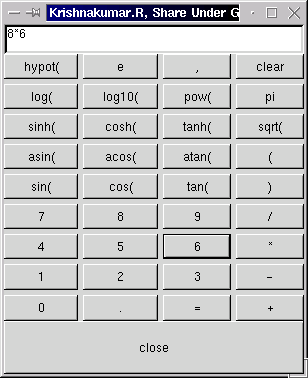

In a competitive world, there is a definite edge to developing applications as rapidly as possible. This can be done using PyGTK which combines the robustness of Python and the raw power of GTK. This article is a hands on tutorial on building a scientific calculator using pygtk.
Well, let me quote from the PyGTK source distribution:
"This archive contains modules that allow you to use gtk in Python
programs. At present, it is a fairly complete set of bindings.
Despite the low version number, this piece of software is quite
useful, and is usable to write moderately complex programs."
- README, pygtk-0.6.4
We are going to build a small scientific calculator using pygtk. I will explain each stage, in detail. Going through each step of this process will help one to get acquainted with pygtk. I have also put a link to the complete source code at the end of the article.
This package is available with almost every Linux distributions. My explanation would be based on Python 1.5.2 installed on a Linux RedHat 6.2 machine. It would be good if you know how to program in python. Even if you do not know python programming, do not worry ! Just follow the instructions given in the article.
Newer versions of this package is available from :
My explanation would be based on pygtk-0.6.4.The tutorial has been divided into three stages. The code and the corresponding output are given with each stage.
First we need to create a window. Window is actually a container. The buttons tables etc. would come within this window.
Open a new file stage1.py, using an editor. Write in the following lines to it :
from gtk import *
win = GtkWindow()
def main():
win.set_usize(300, 350)
win.connect("destroy", mainquit)
win.set_title("Scientific Calculator")
win.show()
mainloop()
main()
First line is for importing the methods from the module named gtk. That means we can now use the functions present in the gtk library.
Then we make an object of type GtkWindow and name it as win. After that we set the size of the window. The first argument is the breadth and the second argument is the height. We also set the title of our window. Then we call the method by name show. This method will be present in case of all objects. After setting the parameters of a particular object, we should always call show. Only when we call the show of a particular object does it becomes visible to the user. Remember that although you may create an object logically; until you call show of that object, the object will not be physically visible.
We connect the signal delete of the window to a function mainquit. The mainquit is an internal function of the gtk by calling which the presently running application can be closed. Do not worry about signals. For now just understand that whenever we delete the window (may be by clicking the cross mark at the window top), the mainquit will be called. That is, when we delete the window, the application is also quit.
mainloop() is also an internal function of the gtk library. When we call the mainloop, the launched application waits in a loop for some event to occur. Here the window appears on the screen and just waits. It is waiting in the 'mainloop', for our actions. Only when we delete the window does the application come out of the loop.
Save the file. Quit the editor and come to the shell prompt. At the prompt type :
python stage1.py
Remember, you should be in Xwindow to view the output.
A screen shot of output is shown below.

Let us start writing the second file, stage2.py. Write the following code to file stage2.py.
from gtk import *
rows=9
cols=4
win = GtkWindow()
box = GtkVBox()
table = GtkTable(rows, cols, FALSE)
text = GtkText()
close = GtkButton("close")
button_strings=['hypot(','e',',','clear','log(','log10(','pow(','pi','sinh(','cosh(','tanh(','sqrt(','asin(',
'acos(','atan(','(','sin(','cos(','tan(',')','7','8','9','/','4','5','6','*','1','2','3','-', '0','.','=','+'
]
button = map(lambda i:GtkButton(button_strings[i]), range(rows*cols))
def main():
win.set_usize(300, 350)
win.connect("destroy", mainquit)
win.set_title("Scientific Calculator")
win.add(box)
box.show()
text.set_editable(FALSE)
text.set_usize(300,1)
text.show()
text.insert_defaults(" ")
box.pack_start(text)
table.set_row_spacings(5)
table.set_col_spacings(5)
table.set_border_width(0)
box.pack_start(table)
table.show()
for i in range(rows*cols) :
y,x = divmod(i, cols)
table.attach(button[i], x,x+1, y,y+1)
button[i].show()
close.show()
box.pack_start(close)
win.show()
mainloop()
main()
The variables rows and cols are used to store the number of rows and columns, of buttons, respectively. Four new objects -- the table, the box, the text box and a button are created. The argument to GtkButton is the label of the button. So close is a button with label as "closed".
The array , button_strings is used to store the label of buttons. The symbols that appear in the keypad of scientific calculator are used here. The variable button is an array of buttons. The map function creates rows*cols number of buttons. The label of the button is taken from the array button_strings. So the ithe button will have the ith string from button_strings as label. The range of i is from 0 to rows*cols-1.
We insert a box into the window. To this box we insert the table. And in to this table we insert the buttons.
Corresponding show of window, table and buttons are called after they are logically created. With win.add we add the box to the window.
Use of text.set_editable(FALSE) will set the text box as non-editable. That means we cannot externally add anything to the text box, by typing. The text.set_usize, sets the size of the text box and the text.insert_defaults inserts the null string as the default string to the text box. This text box is packed into the starting of the box.
After the text box we insert the table in to the box. Setting the attributes of the table is trivial. The for loop inserts 4 buttons into 9 rows. The statement y,x = divmod(i, cols) would divides the value of i by cols and, keeps the quotient in y and the remainder in x.
Finally we insert the close button to the box. Remember, pack_start would insert the object to the next free space available within the box.
Save the file and type
python stage2.py
A screen shot of the output is given below.

Some functions are to be written to make the application do the work of calculator. This functions have been termed as the backend. These are the lines that are to be typed in to scical.py. This is the final stage. The scical.py contains the finished output. The program is given below :
from gtk import *
from math import *
toeval=' '
rows=9
cols=4
win = GtkWindow()
box = GtkVBox()
table = GtkTable(rows, cols, FALSE)
text = GtkText()
close = GtkButton("close")
button_strings=['hypot(','e',',','clear','log(','log10(','pow(','pi','sinh(','cosh(','tanh(','sqrt(','asin(','acos(','atan(','(','sin(','cos(','tan(',')','7','8','9','/','4','5','6','*','1','2','3','-', '0','.','=','+']
button = map(lambda i:GtkButton(button_strings[i]), range(rows*cols))
def myeval(*args):
global toeval
try :
b=str(eval(toeval))
except:
b= "error"
toeval=''
else : toeval=b
text.backward_delete(text.get_point())
text.insert_defaults(b)
def mydel(*args):
global toeval
text.backward_delete(text.get_point())
toeval=''
def calcclose(*args):
global toeval
myeval()
win.destroy()
def print_string(args,i):
global toeval
text.backward_delete(text.get_point())
text.backward_delete(len(toeval))
toeval=toeval+button_strings[i]
text.insert_defaults(toeval)
def main():
win.set_usize(300, 350)
win.connect("destroy", mainquit)
win.set_title("Scientific Calculator: scical (C) 2002 Krishnakumar.R, Share Under GPL.")
win.add(box)
box.show()
text.set_editable(FALSE)
text.set_usize(300,1)
text.show()
text.insert_defaults(" ")
box.pack_start(text)
table.set_row_spacings(5)
table.set_col_spacings(5)
table.set_border_width(0)
box.pack_start(table)
table.show()
for i in range(rows*cols) :
if i==(rows*cols-2) : button[i].connect("clicked",myeval)
elif (i==(cols-1)) : button[i].connect("clicked",mydel)
else : button[i].connect("clicked",print_string,i)
y,x = divmod(i, 4)
table.attach(button[i], x,x+1, y,y+1)
button[i].show()
close.show()
close.connect("clicked",calcclose)
box.pack_start(close)
win.show()
mainloop()
main()
A new variable Pressing any button (using a mouse) other than the If we press the Thus we have the complete scientific calculator ready. Just type
A snapshot of final application is given below.

The source code of the stages can be downloaded by clicking at the links below.
They have all .txt extension. Remove this extension and run the programs. For example change stage1.py.txt to stage1.py before executing.
Lot of example programs will be given in the examples directory, which come along with the pygtk package. In Linux, RehHat 6.2 you can find it under /usr/doc/pygtk-0.6.4/examples/ directory. Run those programs and read their source code. This will give you ample help on developing complex applications.
Happy Programming. Good Bye !
toeval has been included. This variable stores the string that is to be evaluated. The string to be evaluated is present in the text box, at the top. This string is evaluated when the = button is pressed. This is done by calling the function myeval. The string contents are evaluated, using python function eval and the result is printed in the text box. If the string cannot be evaluated (due to some syntax errors), then a string 'error' is printed. We use the try and except for this process.
clear, the close and the =, will trigger the function print_string. This function first clears the text box. Now it appends the string corresponding to the button pressed, to the variable toeval and then displays toeval in the text box.
close button then, the function calcclose is called, which destroys the window. If we press the clear button then the function mydel is called and the text box is cleared. In the function main, we have added the 3 new statements to the for loop. They are for assigning the corresponding functions to the buttons. Thus the = button is attached to myeval function, the clear is attached to mydel and so on.
python scical.py
at the shell prompt and you have the scientific calculator running.
8. Conclusion
Krishnakumar is a final year B.Tech student at Govt. Engg. College Thrissur,
Kerala, India. His journey into the land of Operating systems started with
module programming in linux . He has built a routing operating system by name
GROS.(Details available at his home page:
www.askus.way.to ) His other
interests include Networking, Device drivers, Compiler Porting and Embedded systems.
 Krishnakumar R.
Krishnakumar R.
Copyright © 2002, Krishnakumar R..
Copying license http://www.linuxgazette.net/copying.html
Published in Issue 78 of Linux Gazette, May 2002